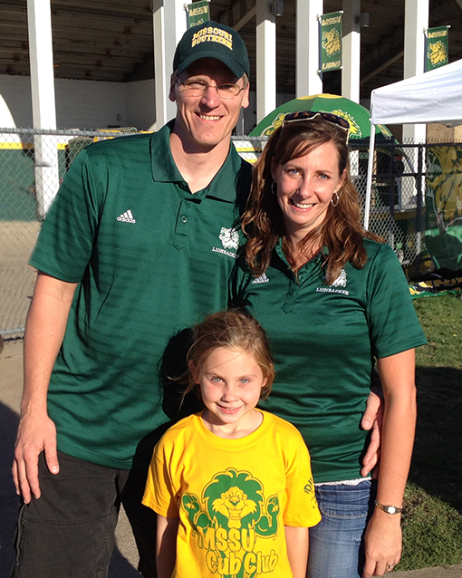
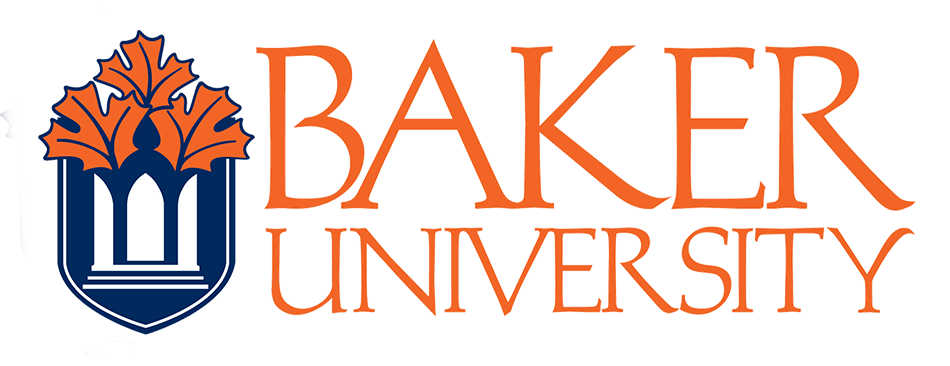
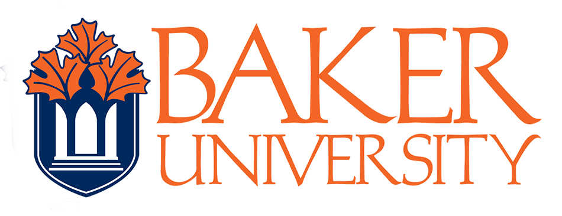

Over the past 20 years, I have been dedicated to education as a full-time teacher and substitute. I have a Bachelor’s degree in General Studies and Early Childhood & Elementary Education. I am also a certified Library Media Specialist and received a Masters in Liberal Arts with an emphasis in education. My career instilled a passion for learning, and I have ventured into the programming world by devoting time to online and KC area workshops, meet-ups, tutorials and lessons.
 
